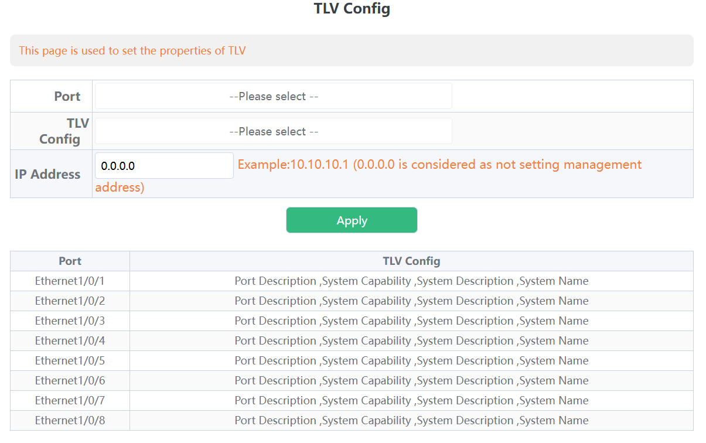

LLDP
LLDP（Link Layer Discovery Protocol）は自分の機器情報をマルチキャストするL2プロトコル。Ciscoは独自プロトコルでCDPを持っている。
LLDPは、隣接機器の検出に際してTLVと呼ばれるタイプ（Type）長さ（Length）値（Value）の属性を を使用してネイバーから情報を認識することができます。LLDPで送信する「必須のTLV」は次の3つです。
・ Chassis ID ・ Port ID ・ Time To Live
https://www.infraexpert.com/study/catalyst25.html
Ubuntu
lldpadは扱いずらいからlldpdを利用する。パッケージ名サービス名ともに
lldpad
自分のアドバタイズ内容を確認
LLDPの設定内容を確認（アドバタイズ間隔など）
ネイバーの確認
sudo lldpcli show neighbors
-------------------------------------------------------------------------------
LLDP neighbors:
-------------------------------------------------------------------------------
Interface: enp3s0, via: LLDP, RID: 1, Time: 0 day, 00:05:49
Chassis:
ChassisID: mac 84:e5:d8:
SysName: Switch
SysDescr: Switch
Capability: Bridge, on
Capability: Router, on
Port:
PortID: local 3
PortDescr: Ethernet1/0/3
TTL: 120
-------------------------------------------------------------------------------
Ubuntu(lldpad)
インターフェイスの設定（送受信）
デフォルトではLLDPが有効な機器がつながっている程度しか広告されない。MACアドレスはわかる。
必要に応じでTLVを追加する
i=enp3s0
sudo lldptool -T -i $i -V mngAddr enableTx=yes
# 明示的に指定する場合
sudo lldptool -T -i $i -V mngAddr ipv4=192.168.144.33
SW
基本すべての情報を0.0.0.0/0で投げる。
